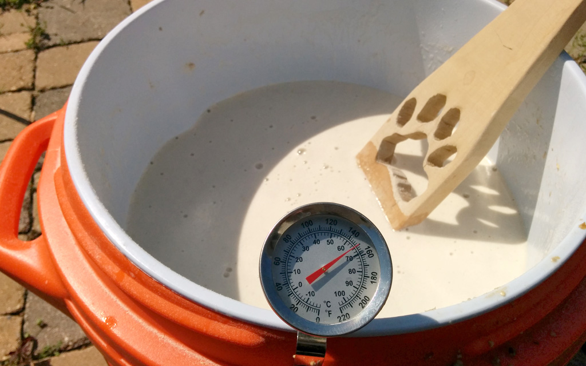
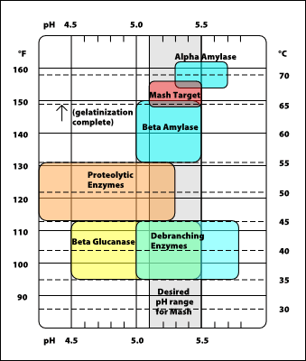

Better understanding of beer flavors and impact of
ingredients and procedures
Opportunity for advanced or experimental
techniques (e.g. decoction, first wort hopping)
Brewing All Grain Cons
Cons
Brewing process takes longer
Initial learning curve to "know your system"
Additional equipment is more expensive
Step #1 - Recipe
My Recommendation - Start with a kit and experiment from there.
Step #2 - Milling the Grain
Step #2 - Milling the Grain
Step #2 - Milling the Grain
The proper crush will determine efficiency and yield.
Homebrew supply shops will crush your grain for you.
Note: Not Friar Tuck
Crush as closely as you can to brewing day.
Step #3 - Mashing

Step #3 - Mashing
Step #3 - Mashing
What happens in the mash?
starch in the grains will dissolve and enzymes from the malt will degrade the long starch molecules into simpler sugar molecules that the yeast can use during fermentation.
Step #3 - Single Infusion Mash
Water to Grain Ratio (1.25 - 1.5 quarts per 1 lb of grain)
Proper Mash Temperature (aim for 148-158°F)
Basic Process
Heat up your water around 15-20° warmer than target mash temp
Optional Step: In a separate pot heat water to 150-170°F to pre-heat the mash tun
Add ~1 gallon of water to mash tun
Alternate adding grain and water stirring often
Check temperature and adjust with hot / cold water
Mash Out and Lautering (more on this later)
Step #3 - Mashing

Step Mashing can give the brewer an opportunity to enact
various enzymes at various stages throughout the mash. This process will impact the flavor and the ferment-ability of the wort.
Step mashing is required for under-modified malts.
Step #3 - Mashing
Mash temperature impacts the fermentability and body of the wort (the lower the mash, the more fermentable the wort, and the dryer the fermented beer).
Water/grist ratio will also impact fermentability and body of the wort.
Ph of the mash will impact character of the wort
Step Mashing — raising and lowering the mash temperature throughout the duration of the mash
Decoction — Pulling some of the mash out and "cooking" it before returning it to the mash.
Step #4 - Sparging
Step #4 - Sparging
GO SLOW!
The DIY spirit is alive and well in sparging techniques
Batch Sparging is an alternative
Beware the dreaded "stuck mash"
"Relax. Don't worry. Have a homebrew." - Charlie Papazian
How do you know when to stop sparging?
First wort hopping?
Late grain additions - color without flavor?
Step #5 - The Boil
At this point, the brewing process is identical to
all-extract brewing. Because the wort is not pre-
boiled, be sure that the wort boils for at least 60
minutes to eliminate DMS.
Clean up!
Use the spent grains - beer bread / compost / or garden mulch
Hands-on workshop where participants will learn advanced techniques related to designing original beer recipes. Participants will leave the workshop with an original recipe.